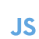
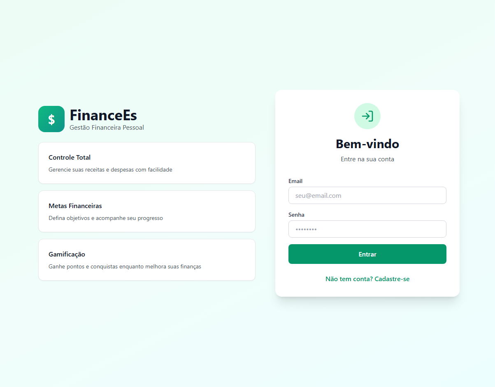

Seja bem vindo!
Ola me chamo Cassio Passos, Desenvolvedor Full Stack em evolução.
Ferramentas que utilizo:




Ola me chamo Cassio Passos, Desenvolvedor Full Stack em evolução.

Olá! Meu nome é Cassio Passos, tenho 24 anos e sou estudante de Análise e Desenvolvimento de Sistemas na Universidade do Vale do Rio dos Sinos (Unisinos). Sou apaixonado por tecnologia e desenvolvimento de software, sempre buscando aprender novas linguagens, ferramentas e boas práticas de programação. Tenho interesse em desenvolvimento web, banco de dados e criação de soluções que resolvam problemas reais. Este portfólio reúne alguns dos projetos que desenvolvi durante minha jornada acadêmica e também projetos pessoais, demonstrando minha evolução, dedicação e vontade de crescer como desenvolvedor. Meu objetivo é conquistar oportunidades na área de tecnologia, contribuir com equipes inovadoras e continuar evoluindo como profissional, sempre aprendendo novas tecnologias e enfrentando novos desafios.
